정보처리산업기사 (2015-03-08 기출문제)
1과목: 데이터 베이스
1. 다음의 설명 (ㄱ)과 (ㄴ)이 의미하고 있는 개념을 옳게 설명한 것으로 짝지어진 것은?
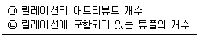
- (ㄱ) 차수(degree) (ㄴ) 레벨(level)
- (ㄱ) 차수(degree) (ㄴ) 카디널리티(cardinality)
- (ㄱ) 레벨(level) (ㄴ) 카디널리티(cardinality)
- (ㄱ) 레벨(level) (ㄴ) 차수(degree)
(정답률: 85%)

2. 데이터베이스의 접근 권한, 보안정책, 무결성 규정 등을 시행하는데 필요한 요건을 기술하고 있는 스키마는?
- 개념 스키마
- 내부 스키마
- 외부 스키마
- 서브 스키마
(정답률: 65%)
3. 다음의 중위(infix) 표기 방식을 전위(prefix) 표기 방식으로 옳게 변환한 것은?
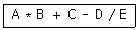
- A B * C ＋ D E / -
- A B C D E * ＋ - /
- - ＋ * A B C / D E
- * ＋ - / A B C D E
(정답률: 69%)
4. 서브루틴 레벨에서 복귀 번지를 기억시키는 경우 가장 적합한 자료 구조는?
- 큐
- 데크
- 연결 리스트
- 스택
(정답률: 67%)
5. 자료 구조를 비선형 구조와 선형 구조로 구분할 경우, 다음 중 성격이 다른 하나는 무엇인가?
- 그래프
- 리스트
- 스택
- 큐
(정답률: 82%)
6. 하나 또는 둘 이상의 기본 테이블로부터 유도되어 만들어진 가상 테이블을 무엇이라고 하는가?
- Domain
- Tuple
- Relation
- View
(정답률: 83%)
7. 현실 세계의 객체를 개념적으로 표현할 때 기본적으로 개체 타입과 이들 간의 관계를 이용하도록 P. Chen이 제안한 데이터 모델은?
- 개체-관계 모델
- 계층형 데이터 모델
- 관계형 데이터 모델
- 네트워크형 데이터 모델
(정답률: 71%)
8. A, B, C, D의 순서로 정해진 입력 자료를 스택에 입력하였다가 출력한 결과가 될 수 없는 것은?(단, 왼쪽부터 먼저 출력이 된 순서이다)
- C, B, A, D
- C, D, A, B
- B, A, D, C
- B, C, D, A
(정답률: 66%)
9. 데이터베이스 설계 단계 중 물리적 설계 단계와 거리가 먼 것은?
- 저장 레코드 양식 설계
- 레코드 집중의 분석 및 설계
- 트랜잭션 모델링
- 접근 경로 설계
(정답률: 71%)
10. 관계형 데이터 모델에서 릴레이션의 특징이 아닌 것은?
- 하나의 튜플에서 각 속성은 원자값을 가진다.
- 하나의 릴레이션에서 튜플들의 순서는 의미가 있다.
- 모든 튜플은 서로 다른 값(유일값)을 갖는다.
- 각 속성은 유일한 이름을 가진다.
(정답률: 79%)
11. 버블 정렬을 이용한 오름차순 정렬시 다음 자료에 대한 2회전 후의 결과는?
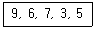
- 6, 3, 5, 7, 9
- 3, 6, 7, 9, 5
- 6, 7, 3, 5, 9
- 3, 9, 6, 7, 5
(정답률: 74%)
12. 색인 순차 파일(Indexed Sequential Access Method file)의 인덱스에 해당하지 않는 것은?
- master 인덱스
- prime 인덱스
- cylinder 인덱스
- track 인덱스
(정답률: 73%)
13. 데이터 모델의 정의 요소가 아닌 것은?
- structure
- relationship
- operation
- constraint
(정답률: 50%)
14. 다음 SQL 명령어 중 DDL에 해당하는 것은?
- SELECT
- UPDATE
- ALTER
- DELETE
(정답률: 78%)
15. 관계 데이터베이스의 테이블인 수강(학번, 과목명, 중간성적, 기말성적)에서 과목명이 “DB”인 모든 튜플들을 성적에 의해 정렬된 형태로 검색하고자 한다. 이때 정렬 기준은 기말 성적의 내림차순으로 정렬하고 기말성적이 같은 경우는 중간성적의 오름차순으로 정렬하고자 한다. 다음 SQL 질의문에서 ORDER BY 절의 밑줄 친 부분의 내용으로 옳은 것은?
- 중간성적 DESC, 기말성적 ASC
- 기말성적 DESC, 중간성적 ASC
- 중간성적 DOWN, 기말성적 UP
- 중간성적(DESC), 기말성적(ASC)
(정답률: 75%)
16. 외래키(foreign key)와 가장 직접적으로 관련된 제약조건은 어느 것인가?
- 개체 무결성
- 보안 무결성
- 참조 무결성
- 정보 무결성
(정답률: 73%)
17. 후보키(Candidate key)가 만족해야 할 두 가지 성질로 가장 타당한 것은?
- 유일성과 최소성
- 유일성과 무결성
- 독립성과 최소성
- 독립성과 무결성
(정답률: 58%)
18. This is a linear list for which all insertions and deletions, and usually all accesses, are made at one end of the list. What is this?
- queue
- stack
- graph
- tree
(정답률: 64%)
19. Fill in the blank of the sentence.
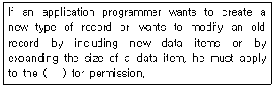
- Database administrator
- Compiler
- Editor program
- Data definition language
(정답률: 67%)
20. 다음의 데이터베이스 설계 단계 중 가장 먼저 행해지는 것은?
- 논리 설계
- 물리 설계
- 개념 설계
- 요구분석
(정답률: 77%)
2과목: 전자 계산기 구조
21. 메모리로부터 fetch한 데이터는 어떤 레지스터로 전송하는가?
- MBR(memory buffer register)
- MAR(memory address register)
- PC(program counter)
- IR(instruction register)
(정답률: 44%)
22. I/O Multiplex channel은 어느 장치에 주로 사용하는가?
- Line printer
- Magnetic disk
- Magnetic drum
- Magnetic tape
(정답률: 43%)
23. 10진수의 127을 8진수로 변환한 값은?
- 127
- 135
- 165
- 177
(정답률: 62%)
24. 컴퓨터에서 정수를 표기할 때 크기를 제한받는 가장 큰 이유는?
- 레지스터의 개수
- 기억용량
- 워드의 비트수
- 기억장치의 종류의 차이
(정답률: 68%)
25. 마이크로 오퍼레이션 수행에 필요한 시간을 무엇이라 하는가?
- 마이크로 사이클 타임
- 액세스 타임
- 서치 타임
- 클록 타임
(정답률: 70%)
26. 다음과 같은 시프트 레지스터를 2bit 왼쪽 시프트(left-shift)시킬 때 실제로 이 레지스터의 내용은?
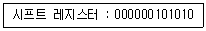
- (0254)10
- (0126)10
- (0168)10
- (0120)10
(정답률: 61%)
27. 캐시 기억장치(cache memory)의 특징으로 틀린 것은?
- 고속이며, 가격이 저가이다
- 주기억장치와 CPU 사이에서 일종의 버퍼(buffer) 기능을 수행한다.
- 기억장치의 접근(access) 시간을 줄이므로 컴퓨터의 처리 속도를 향상시킨다.
- 수십 KB ~ 수백 KB의 용량을 사용한다.
(정답률: 67%)
28. 마이크로프로세서 명령 집합에서 데이터 전송 동작이 아닌 것은?
- Shift
- Load
- Store
- Move
(정답률: 51%)
29. Computer system에 예기치 않은 일이 발생했을 때 제어 프로그램에게 알려주는 것을 무엇이라 하는가?
- Interrupt
- Program library
- Program Status Word
- Problem state
(정답률: 75%)
30. 인터럽트 처리에서 I/O 장치들의 우선순위를 지정하는 이유는?
- 인터럽트 발생 빈도를 확인하기 위해서
- CPU가 하나 이상의 인터럽트를 처리하지 못하게 하기 위해서
- 여러 개의 인터럽트 요구들이 동시에 들어올 때 그들 중의 하나를 선택하기 위해서
- 인터럽트 처리 루틴의 주소를 알기 위해서
(정답률: 72%)
31. 보조기억장치 내의 데이터를 크기순으로 배열한 것으로 옳은 것은?
- item → record → field → block → file
- item → field → record → block → file
- field → item → block → record → file
- field → item → record → block → file
(정답률: 39%)
32. stack과 가장 관계있는 명령어 형식은?
- zero-address 명령어
- one-address 명령어
- two-address 명령어
- three-address명령어
(정답률: 65%)
33. 주소 선의 수가 11개 이고 데이터 선의 수가 8개인 ROM의 내부 조직을 나타내는 것은?
- 2K × 8
- 3K × 8
- 4K × 8
- 12K × 8
(정답률: 54%)
34. 반가산기를 구성하고 있는 논리 게이트의 종류는?
- AND와 OR
- AND와 NOT
- OR와 NOT
- AND, OR와 NOT
(정답률: 44%)
35. 전가산기에서 합(sum)의 논리식은?
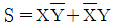
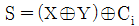
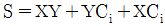
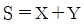
(정답률: 61%)
36. -9를 8비트의 수치적 자료로 표현한 것으로 틀린 것은?
- 부호 절대값 표현 : 1000 1001
- 1의 보수 표현 : 1111 0110
- 2의 보수 표현 : 1111 0111
- 팩형 10진 표현 : 1001 1100
(정답률: 57%)
37. 인터럽트 처리 시 현재의 명령어 실행을 끝낸 즉시 PC에 저장되어 있는 다음에 실행할 명령어의 주소를 저장하는 곳은?
- Queue
- Dequeue
- Stack
- Buffer
(정답률: 59%)
38. 기억장치의 용량을 나타내는 단위는 옳게 설명한 것은?
- MB는 Mega Byte의 약자로 215바이트를 말한다.
- GB는 Giga Byte의 약자로 220바이트를 말한다.
- TB는 Tera Byte의 약자로 240바이트를 말한다.
- PB는 Peta Byte의 약자로 260바이트를 말한다.
(정답률: 52%)
39. 서브루틴 처리 시 사용되는 명령어들은?
- Shift와 And
- Call과 Return
- Skip과 Jump
- Increment와 Decrement
(정답률: 53%)
40. 채널 명령어인 CCW(Channel Command Word)의 구성 요소가 아닌 것은?
- 상태 필드(Flag Field)
- 데이터 필드(Data Field)
- 주소 필드(Address Field)
- 명령 필드(Command Field)
(정답률: 38%)
3과목: 시스템분석설계
41. 입력 설계 순서로 옳은 것은?
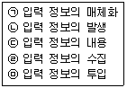
- (ㄱ)→(ㄴ)→(ㄷ)→(ㄹ)→(ㅁ)
- (ㅁ)→(ㄹ)→(ㄷ)→(ㄴ)→(ㄱ)
- (ㄴ)→(ㄹ)→(ㄱ)→(ㅁ)→(ㄷ)
- (ㄱ)→(ㄴ)→(ㄷ)→(ㅁ)→(ㄹ)
(정답률: 70%)
42. 소프트웨어 개발주기 모델 중 폭포수형의 특징으로 옳지 않은 것은?
- 프로젝트 관리 및 자동화가 어렵다.
- 단계별 정의가 분명하고, 각 단계별 산출물이 명확하다.
- 계획수립 → 위험 분석 → 공학화 → 고객의 평가의 순서로 진행된다.
- 전통적인 라이프 사이클 모델이다.
(정답률: 42%)
43. 시스템으로서 “좋은 시스템”과 “좋지 않은 시스템”을 판정하는 기준으로 거리가 먼 것은?
- 시스템의 가격
- 시스템의 효율
- 시스템의 신뢰성
- 시스템의 유연성
(정답률: 71%)
44. 흐름도의 종류 중 컴퓨터의 입력→처리→출력되는 하나의 처리 과정을 그림으로 표시한 다이어그램을 의미하는 것은?
- 블록 차트
- 시스템 흐름도
- 프로세스 흐름도
- 프로그램 흐름도
(정답률: 55%)
45. 시스템 개발에 대한 문서화의 효과로 거리가 먼 것은?
- 시스템 개발 후 유지보수가 용이하다.
- 시스템 개발팀에서 운용팀으로 인수인계가 용이하다.
- 시스템 개발의 요식적 절차를 부각시킬 수 있다.
- 시스템 개발 요령 및 순서를 표준화 할 수 있다.
(정답률: 73%)
46. 코드 작성 시 유의사항으로 적합하지 않은 것은?
- 공통성이 있어야 한다.
- 복잡성이 있어야 한다.
- 체계성이 있어야 한다.
- 확장성이 있어야 한다.
(정답률: 73%)
47. 데이터 파일의 종류 중 마스터 파일을 갱신 또는 조회하기 위해 작성하는 파일은?
- trailer file
- transaction file
- summary file
- source data file
(정답률: 62%)
48. 파일 설계 단계 중 파일 매체 검토 시 고려사항에 해당되는 내용 모두를 옳게 나열한 것은?
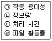
- (ㄱ), (ㄹ)
- (ㄴ), (ㄹ)
- (ㄱ), (ㄴ), (ㄷ)
- (ㄴ), (ㄷ), (ㄹ)
(정답률: 48%)
49. 객체 지향 설계에서 자료와 연산들을 함께 묶어 놓는 일로써, 객체의 자료가 변조되는 것을 막으며 그 객체의 사용자들에게 내부적인 구현의 세부적인 내용들을 은폐시키는 기능을 하는 것은?
- 상속화
- 추상화
- 클래스
- 캡슐화
(정답률: 70%)
50. 십진 분류 코드에 대한 설명으로 옳지 않은 것은?
- 대량의 자료에 대한 삽입 및 추가가 용이하다.
- 코드의 범위를 무한대로 확장 가능하다.
- 배열이나 집계가 용이하다.
- 기계 처리가 용이하다.
(정답률: 59%)
51. 출력 설계 단계 중 출력 정보 분배에 대한 설계 시 검토 사항으로 거리가 먼 것은?
- 분배 책임자
- 분배 경로
- 분배 주기 및 시기
- 출력 정보명
(정답률: 49%)
52. 다음의 출력설계 단계 중 제일 먼저 설계해야 하는 것은?
- 출력정보의 분배에 관한 설계
- 출력정보의 내용에 관한 설계
- 출력정보의 매체에 관한 설계
- 출력정보의 이용에 관한 설계
(정답률: 58%)
53. 파일의 종류 중 통계 처리나 파일의 자료에 잘못이 발생하였을 때, 파일을 원상 복구하기 위해 사용되며, 현재까지 변화된 정보를 포함하는 것으로 기록 파일 또는 이력 파일이라고도 하는 것은?
- 트레일러 파일
- 히스토리 파일
- 트랜잭션 파일
- 요약 파일
(정답률: 69%)
54. 원시코드 라인수(LOC) 기법에 의하여 예측된 총 라인 수가 30000라인, 개발에 참여할 프로그래머가 5명, 프로그래머들의 평균생산성이 월간 200라인일 때, 개발에 소요되는 기간은?
- 10개월
- 15개월
- 20개월
- 30개월
(정답률: 67%)
55. 모듈 작성 시 주의사항으로 옳은 내용 모두를 나열한 것은?
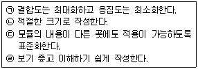
- (ㄱ), (ㄴ)
- (ㄱ), (ㄹ)
- (ㄱ), (ㄷ), (ㄹ)
- (ㄴ), (ㄷ), (ㄹ)
(정답률: 66%)
56. 시스템의 특징 중 다음 설명에 해당하는 것은?
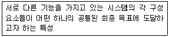
- 자동성
- 종합성
- 제어성
- 목적성
(정답률: 69%)
57. 코드의 오류 발생 형태 중 입력 시 한 자리를 빠뜨리고 기록한 에러를 무엇이라고 하는가?
- random error
- omission error
- transcription error
- transposition error
(정답률: 64%)
58. 표준 처리 패턴 중 특정 조건이 주어진 파일 중에서 그 조건에 만족되는 것과 그렇지 않은 것으로 분리 처리하는 것은?
- 갱신
- 정렬
- 대조
- 분배
(정답률: 57%)
59. 자료 사전에서 선택을 의미하는 기호는?
- { }
- ( )
- [ ]
- **
(정답률: 53%)
60. 프로세스 설계 시 유의 사항으로 거리가 먼 것은?
- 정보의 양과 질에 유의한다.
- 하드웨어의 기기 구성, 처리 성능을 고려한다.
- 분류 처리는 가능한 최대화 한다.
- 오류 처리를 간소화한다.
(정답률: 66%)
4과목: 운영체제
61. 디렉토리 구조 중 다음 설명에 해당하는 것은?
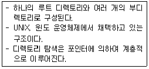
- 1단계 디렉토리 구조
- 트리 디렉토리 구조
- 2단계 디렉토리 구조
- 비순환 그래프 디렉토리 구조
(정답률: 62%)
62. 3 페이지가 들어갈 수 있는 기억장치에서 다음과 같은 순서로 페이지가 참조될 때 FIFO 기법을 사용하면 페이지 부재(page fault)는 몇 번 일어나는가? (단, 현재 기억장치는 모두 비어 있다고 가정한다.)
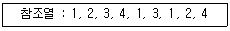
- 4
- 5
- 6
- 8
(정답률: 53%)
63. 운영체제의 목적으로 거리가 먼 것은?
- 시스템 성능 향상
- 처리량 향상
- 응답시간 증가
- 신뢰성 향상
(정답률: 76%)
64. HRN 스케줄링 기법을 적용할 경우 우선순위가 가장 낮은 것은?
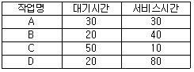
- A
- B
- C
- D
(정답률: 60%)
65. 운영체제의 운용 기법 중 시분할 체제에 대한 설명으로 옳지 않은 것은?
- 일괄 처리 형태에서의 사용자 대기 시간을 줄이기 위한 대화식 처리 형태이다.
- 여러 사용자가 CPU를 공유하고 있지만 마치 자신만이 독점하여 사용하고 있는 것처럼 느끼게 된다.
- 좋은 응답 시간을 제공하기 위해 각 사용자들에게 일정 CPU 시간만큼을 차례로 할당하는 SJF 스케줄링을 사용한다.
- 단위 작업 시간을 Time Slice라고 한다.
(정답률: 53%)
66. UNIX의 특징으로 볼 수 없는 것은?
- 대화식 시분할 운영체제이다.
- 대부분의 코드가 어셈블리어로 구성되어 있다.
- 높은 이식성을 가진다.
- 트리 구조의 파일 시스템을 갖는다.
(정답률: 60%)
67. 교착상태 해결 방법 중 다음 사항과 관계되는 것은?
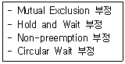
- Recovery
- Detection
- Avoidance
- Prevention
(정답률: 50%)
68. UNIX에서 파일 내용을 화면에 표시하는 명령은?
- cat
- finger
- ls
- chown
(정답률: 63%)
69. SJF(Shortest Job First) 스케줄링에서 작업 도착 시간과 CPU 사용시간은 다음 표와 같다. 모든 작업들의 평균 대기시간은 얼마인가?
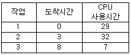
- 6
- 9
- 12
- 18
(정답률: 57%)
70. 페이지 크기에 대한 설명으로 옳지 않은 것은?
- 페이지 크기가 클 경우 전체적인 입출력 효율성이 증가된다.
- 페이지 크기가 작을 경우 페이지 맵 테이블의 크기가 작아지고 매핑 속도가 빨라진다.
- 페이지 크기가 클 경우 프로그램 수행에 불필요한 내용까지도 주기억장치에 적재될 수 있다.
- 페이지가 크기가 작을 경우 디스크 접근 횟수가 많아진다.
(정답률: 57%)
71. 빈번한 페이지의 부재 발생으로 프로세스의 수행 소요시간보다 페이지 교환에 소요되는 시간이 더 큰 경우를 의미하는 것은?
- 스래싱(thrashing)
- 세마포어(semaphore)
- 페이징(paging)
- 오버레이(overlay)
(정답률: 55%)
72. 시스템과 그 시스템 내의 자료에 대한 정보의 무결성과 안정성을 어떻게 보장할 것인지에 관련된 사항을 의미하는 것은?
- 보호
- 보안
- 침투
- 해킹
(정답률: 75%)
73. 분산 운영체제 시스템에 관한 설명으로 옳지 않은 것은?
- 약결합(loosely-coupled)으로 볼 수 있다.
- 업무량 증가에 따른 점진적인 확장이 용이하다.
- 높은 보안성이 유지된다.
- 제한된 자원을 여러 지역에서 공유 가능하다.
(정답률: 64%)
74. 프로세스의 정의로 옳지 않은 것은?
- 프로세스 제어 블록을 가진 프로그램
- 동기적 행위를 일으키는 주체
- 운영체제가 관리하는 실행 단위
- 프로시저가 활동 중인 것
(정답률: 60%)
75. 다음 표는 고정 분할에서의 기억장치 단편화 현상을 보이고 있다. 내부단편화(Internal Fragmentation)는 모두 얼마인가?
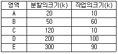
- 170 k
- 260 k
- 430 k
- 480 k
(정답률: 61%)
76. 다음 중 천재지변이나 사고로 인해 정보의 손실이나 파괴를 막기 위해 취할 수 있는 방법으로 가장 올바른 것은?
- 파일시스템을 체계적으로 잘 정리한다.
- 백업(Back-up)을 주기적으로 실시하여 안전한 곳에 보관한다.
- 컴퓨터에 안전장치를 하고, 필요할 때만 조심해서 사용해야 한다.
- 사고는 컴퓨터가 가동될 때만 발생하므로 사용 후에는 컴퓨터 전원을 반드시 꺼 놓는다.
(정답률: 73%)
77. 13k의 작업을 다음 그림의 40k 공백의 작업공간에 할당했을 경우 사용된 기억장치 배치전략 기법은?
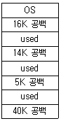
- Best fit
- Last fit
- First fit
- Worst fit
(정답률: 69%)
78. 임계구역의 원칙으로 옳지 않은 것은?
- 두 개 이상의 프로세스가 동시에 사용할 수 있다.
- 순서를 지키면서 신속하게 사용한다.
- 하나의 프로세스가 독점하게 해서는 안 된다.
- 임계구역이 무한 루프에 빠지지 않도록 주의해야 한다.
(정답률: 69%)
79. RR(Round Robin) 방식에 관한 설명으로 옳지 않은 것은?
- 시간할당량이 커지면 FCFS 방식과 같게 된다.
- 시간할당량이 너무 작으면 스래싱에 소요되는 시간의 비중이 커진다.
- 준비상태 큐에서 기다리고 있는 프로세스들 중에서 실행시간이 가장 짧은 프로세스에게 먼저 CPU를 할당하는 기법이다.
- 시스템이 사용자에게 적합한 응답시간을 제공해 주는 대화식 시스템에 유용하다.
(정답률: 52%)
80. 강 결합 시스템(Tightly Coupled System)의 특징에 해당하는 것은?
- 프로세서간의 통신은 공유 메모리로 이루어진다.
- 각 시스템은 자신의 운영체제를 가진다.
- 각 시스템은 자신만의 주기억장치를 가진다.
- 각 시스템간의 통신은 메시지 교환으로 이루어진다.
(정답률: 47%)
5과목: 정보통신개론
81. 병렬 전송 방식에 대한 설명으로 거리가 먼 것은?
- 병렬 전송은 한 문자를 구성하는 각 비트를 각각의 데이터선을 통해 한꺼번에 전달하는 방식이다.
- 직렬 전송 보다 전송 속도가 빠르고, 원거리 데이터 전송에서 보다 경제적이다.
- 스트로브(strobe) 신호는 송신측 다음 문자의 전송을 수신측에 알리게 된다.
- 비지(busy) 신호는 수신측이 데이터 수신 가능 상태를 송신측에 전달한다.
(정답률: 52%)
82. 멀티미디어의 표준화에 해당되지 않는 것은?
- JPEG
- MPEG
- MHS
- MHEG
(정답률: 53%)
83. 문자 위주 동기 전송의 제어문자 중 전송해야 할 프레임의 끝을 알리는 것은?
- EXT
- ETB
- EOT
- ENQ
(정답률: 25%)
84. 데이터 전송오류 검출방식으로 틀린 것은?
- 패리티(parity) 검사
- 블록합 검사(block sum check)
- 순환 잉여 검사(CRC)
- 바이폴라(bipolar) 검사
(정답률: 57%)
85. 정보통신시스템의 특징으로 틀린 것은?
- 거리와 시간의 극복
- 대형 컴퓨터의 공동 사용
- 광대역 전송에만 사용
- 대용량 파일의 공동 이용
(정답률: 69%)
86. 인터넷 통신을 위한 기본 통신 프로토콜은?
- PPP
- HDLC
- X.25
- TCP/IP
(정답률: 67%)
87. OSI-7 계층 중 프로세스간의 대화제어 및 동기점을 이용한 효율적인 데이터 복구제공을 위한 계층은?
- 표현 계층
- 데이터링크 계층
- 세션 계층
- 전송 계층
(정답률: 45%)
88. 패킷교환방식에 대한 설명으로 틀린 것은?
- 교환기에서 패킷을 일시 저장 후 전송하는 축적교환 기술이다.
- 패킷처리 방식에 따라 데이터그램과 가상회선 방식이 있다.
- X.25는 패킷형 단말기와 패킷망 간의 접속 프로토콜이다.
- X.75는 비패킷형 단말과 PAD 간의 접속 프로토콜이다.
(정답률: 49%)
89. VAN의 계층 구조 중 통신처리 계층의 기능에 해당하는 것은?
- 패킷교환방식을 사용하여 교환기능을 수행한다.
- 필요한 자료를 정보전송 매체를 통하여 즉시 제공한다.
- 순수한 정보의 전송만을 수행한다.
- 축적기능 및 변환기능을 수행한다.
(정답률: 27%)
90. 다음이 설명하고 있는 LAN의 매체 접근 제어방식은?
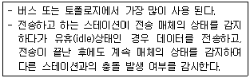
- CSMA/CD
- token bus
- token ring
- slotted ring
(정답률: 53%)
91. 인터넷 프로토콜TCP/IP에서 TCP는 OSI 7 계층 중 어느 계층에 해당되는가?
- 응용 계층
- 전송 계층
- 네트워크 계층
- 데이터링크 계층
(정답률: 43%)
92. HDLC 프레임을 구성하는 필드가 아닌 것은?
- FCS 필드
- Flag 필드
- Control 필드
- Link 필드
(정답률: 46%)
93. 다음 중 데이터 전송 제어 절차가 올바른 것은?
- 통신회선연결 → 링크설정 → 통신회선해제 → 데이터전송 → 링크해제
- 통신회선연결 → 링크설정 → 데이터전송 → 링크해제 → 통신회선해제
- 링크설정 → 통신회선연결 → 데이터전송 → 링크해제 → 통신회선해제
- 링크설정 → 통신회선연결 → 링크해제 → 데이터전송 → 통신회선해제
(정답률: 64%)
94. 반송파로 사용하는 정현파의 위상에 정보를 실어 보내는 변조 방식은?
- ASK
- DM
- PSK
- ADPCM
(정답률: 56%)
95. RS-232C 표준 인터페이스는 몇 개의 핀(PIN)으로 구성 되는가?
- 10
- 22
- 25
- 32
(정답률: 47%)
96. 다음 국제표준 통신 프로토콜 중 IP주소를 물리주소로 변환하기 위해 사용되는 것은?
- ARP
- TCP
- ICMP
- DHCP
(정답률: 45%)
97. 아날로그 신호를 디지털 신호로 변환하는 PCM 부호화 단계로 맞는 것은?
- 양자화 → 부호화 → 표본화
- 표본화 → 양자화 → 부호화
- 양자화 → 표본화 → 부호화
- 표본화 → 부호화 → 양자화
(정답률: 68%)
98. 주파수분할 다중화(FDM)방식에서 보호대역(guard band)의 역할로 올바른 것은?
- 주파수 대역폭 확장
- 신호의 세기를 증폭
- 채널간의 간섭을 제한
- 많은 채널을 좁은 주파수 대역에 포함
(정답률: 68%)
99. 다음 중 ITU-T 권고안에서 X 시리즈의 내용은?
- PSTN을 이용한 데이터전송에 관한 사항
- 축적프로그램 제어식 교환의 프로그램에 관한 사항
- 공중데이터통신망을 이용한 데이터 전송에 관한 사항
- 전신 데이터의 전송 및 교환에 관한 사항
(정답률: 47%)
100. 광섬유 케이블에서 클래드(Clad)의 주 역할은?
- 광 신호를 반사시키는 역할
- 광 신호를 증폭시키는 역할
- 광 신호를 저장시키는 역할
- 광 신호를 입력시키는 역할
(정답률: 61%)